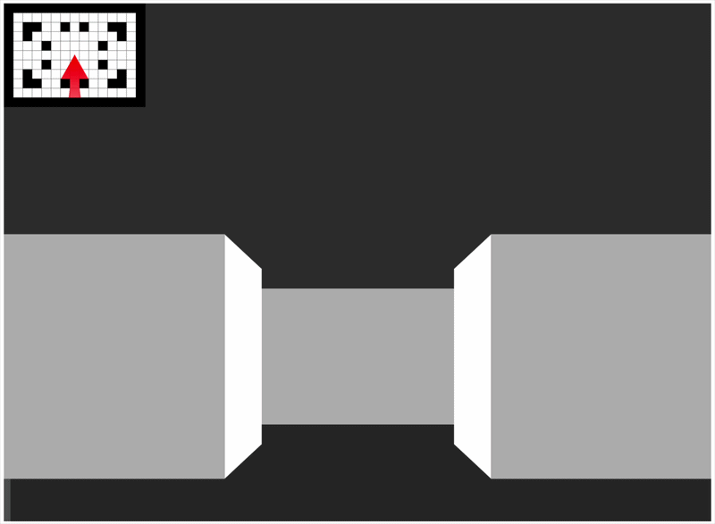

A browser-based typing game inspired by Wolfenstein 3D
Typenstein3D is planned to become a browser-based raycast 3D first-person typing game built with TypeScript, inspired by the techniques used in Wolfenstein 3D (1992) by Id Software.

Prerequisites: Node.js and Python 3 (for the dev server).
npm install
npm run ts:compile # Compile TypeScript → dist/
npm start # Serve at http://localhost:3000
npm run ts:watch # Recompile on save
npm start # Serve at http://localhost:3000 (Python web server)
npm test # Run unit tests
npm run test:coverage # Generate coverage report
npm run ts:format:write # Run prettier in write mode
npm run ts:lint # Run ESLint in src/ and test/
npm run build:docs # Build documentation -> docs/
| Key | Action |
|---|---|
| ↑ | Move forward |
| ↓ | Move backward |
| ← | Turn left |
| → | Turn right |
The map's color scheme is configurable via the theme object, which is exposed on window.theme in the browser. Open the browser console and modify any property to see changes in real time.
// Example: change wall color to dark red
window.theme.map.wall = '#8b0000';
| Property | Default | Description |
|---|---|---|
map.tileBorder |
"#000" |
Color of the grid lines on the map |
map.floor |
"#fff" |
Color of floor tiles on the map |
map.wall |
"#000" |
Color of wall tiles on the map |
map.player |
"#ff0000" |
Color of the player dot on the map |
map.rays |
"#ff0000" |
Color of the cast rays on the map |
map.rotationAngle |
"#0000ff" |
Color of the rotation angle line |
gradientShading |
false |
Enable distance-based wall shading |
gradientScale |
0.001 |
Intensity of the gradient shading |
sky |
"#333333" |
Color of the sky (upper half) |
floor |
"#2b2b2b" |
Color of the floor (lower half) |
Runtime debug flags are exposed on window.debugOptions in the browser. Toggle them in the console without reloading.
// Example: render only the center ray
window.debugOptions.render.singleRay = true;
// Example: show the player's rotation angle line
window.debugOptions.render.rotationAngle = true;
// Example: zoom the map in/out
window.debugOptions.render.mapScale = 2;
| Property | Default | Description |
|---|---|---|
map |
true |
Show the top-down map overlay |
singleRay |
false |
Cast and render only a single ray |
rotationAngle |
false |
Draw the player's forward angle line on the map |
wallProjection |
true |
Render the 3D wall projection |
mapScale |
0.2 |
Scale factor applied to the top-down map overlay |
typedoom/
├── src/
│ ├── index.ts Entry point — initializes the p5 canvas and drives the game loop
│ ├── game_manager.ts Singleton coordinator — owns the map, player, and ray caster
│ ├── game_map.ts Tile-based map — grid layout, wall/floor data, collision queries
│ ├── maps.ts Collection of furnished maps
│ ├── player.ts Player state — position, rotation, movement speed, input handling
│ ├── ray_caster.ts DDA ray casting engine — computes wall intersections each frame
│ ├── constants.ts Game constants — tile size, map dimensions, FOV, window dimensions
│ ├── math.ts Math utilities — Vector type, angle conversion, Euclidean distance
│ ├── game_object.ts Base interface and abstract class for all game loop participants
│ ├── theme.ts Map color scheme — exposed on window.theme for live editing
│ ├── debug_options.ts Runtime debug flags — exposed on window.debugOptions for live toggling
│ └── vendor/ Bundled third-party libraries (p5.js)
├── docs/ Documentation built using TypeDoc
├── tests/ Vitest unit tests
└── dist/ Compiled JavaScript output (generated)
| Tool | Purpose |
|---|---|
| TypeScript | Type-safe game logic |
| p5.js | 2D canvas rendering |
| Vitest | Unit testing |
| Prettier | Code formatting |
| ESLint | Code formatting |
Raycasting creates the illusion of 3D by working entirely in 2D. From a top-down perspective, the player stands in a tile-based grid and looks out across a field of view (FOV). For each vertical column of the screen, a single ray is fired into the map at a slightly different angle across that FOV.
████████████████████
╱ │ ╲ ← Wall
╱ │ ╲
╱ │ ╲
╱ │ ╲
└────────────P────────────┘
(top-down)
When a ray hits a wall, its distance back to the player determines how tall that wall column is drawn on screen. Close walls appear tall; distant walls appear short. Repeat this for every screen column and you get the depth illusion.
This engine uses the Digital Differential Analysis (DDA) to find where each ray intersects the map grid. This requires far more processing due to using trigonometry instead of vectors, but DDA is used to be more inline with the original implementation Id Software used in Wolfenstein 3D.
The naive approach — stepping along a ray pixel by pixel — is too slow. DDA is smarter: it jumps directly to the next grid line crossing, so it only ever checks one tile at a time.
For any ray cast at an angle, there are two kinds of grid crossings to track:
┌──────┬──────┬──────┐
│▓▓▓▓▓▓│▓▓▓▓▓▓│▓▓▓▓▓▓│ ← Wall
├──────┼───h──┼──────┤ h = horizontal grid crossing
│ │ ╱ │▓▓▓▓▓▓│ v = vertical grid crossing
├──────|─╱────┼──────┤
│ v │▓▓▓▓▓▓│
├─────╱┼──────┼──────┤
│ / │ │▓▓▓▓▓▓│
├───╱──┼──────┼──────┤
P
DDA walks each set of crossings independently, stepping h forward, then v forward, and at each step checks whether the tile at that crossing is a wall. Whichever crossing (horizontal or vertical) reaches a wall first is the actual collision point. That distance is then used to compute the height of that column from the projection plane.
The current state of the project is the raycast engine itself; there's a lot left to do to make this a full game. If you'd like to contribute, I'd gladly welcome it!